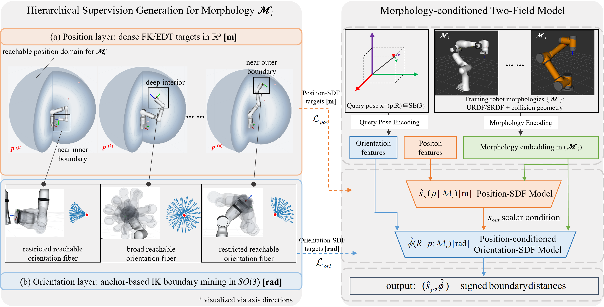
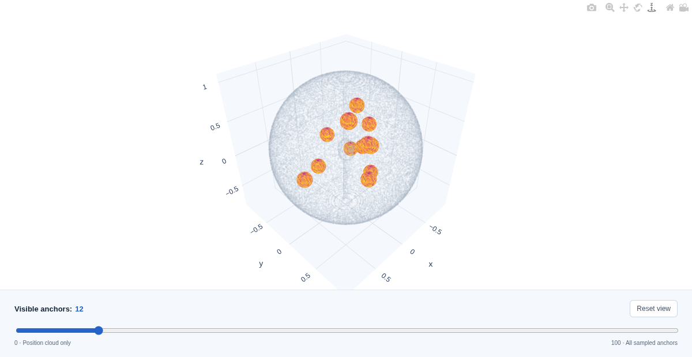

CMRDF: Morphology-Conditioned Reachability Fields for Task-Space Robot Policy Transfer
1 Beijing Qianjue Technology Co., Ltd., Beijing, China
2 Center for Brain-Inspired Computing Research,
Department of Precision Instrument, Tsinghua University, Beijing, China
* Correspondence to: shangqi_guo@mail.tsinghua.edu.cn
Abstract
Generalist robot policies often represent actions as end-effector target poses in task space, which facilitates policy transfer across robots performing the same task. However, a task-space pose that is feasible for one morphology may be infeasible for another due to joint limits, workspace differences, or self-collision constraints. Existing pose reachability methods often learn monolithic fields over the full SE(3) pose space, which spreads expensive inverse-kinematics supervision over a high-dimensional domain and leaves near-boundary regions poorly sampled in cross-morphology settings. We propose Cross-Morphology Reachability Distance Fields (CMRDF), a morphology-conditioned task-space reachability representation that decomposes full-pose feasibility into global position reachability and position-conditioned orientation reachability. The two outputs are signed-distance function (SDF) proxies with physical units. CMRDF uses dense forward-kinematics coverage and distance-to-boundary targets for the Position-SDF, and inverse-kinematics boundary mining at representative position anchors for the Orientation-SDF. The differentiable fields support reachability queries and gradient-based local pose repair. Under matched full-pose inverse-kinematics budgets, CMRDF improves SE(3) accuracy over a capacity-matched monolithic baseline by 2.5 percentage points at both 1.00× and 0.51×. It also supports low-distortion pose repair and zero-shot transfer under joint-limit and same-family geometry shifts. In target-side policy fine-tuning, converted demonstrations reduce the required native data from 60–80 to 20 demonstrations at 90% of a target-only reference policy's success rate.
Two fields. One reachability prior.
A morphology-conditioned representation connects dense position supervision with focused orientation boundary mining, supporting reachability queries and gradient-based local pose repair.

Position-dense supervision
Forward-kinematics coverage and distance-to-boundary targets describe the reachable position domain. The Position-SDF proxy has physical units of meters.
Orientation-focused supervision
Inverse-kinematics boundary mining concentrates on representative reachable position anchors. The position-conditioned Orientation-SDF proxy has units of radians.
Explore reachability in 3D.
Inspect how orientation support changes across the position-reachable workspace.

Loading the 3D visualization…
Unable to load the 3D view
Open separately ↗Explore the position anchors
Drag to rotate and scroll or pinch to zoom. The slider cumulatively shows the first N anchors, ordered from the position interior toward the boundary. Start with a few anchors to inspect their individual projections.
Read the orientation support
The sphere shows tool z-axis directions. Color indicates reachable rotation support about each direction, from dark blue (little or none) to yellow (larger support).
This precomputed, qualitative visualization shows a projection of orientation reachability, not the full SO(3) boundary or online model inference. It is not a quantitative evaluation.
Code release in preparation
The research implementation is being prepared for release. A public repository link will be added here when available.
Citation
@inproceedings{yang2026cmrdf,
title = {CMRDF: Morphology-Conditioned Reachability Fields for
Task-Space Robot Policy Transfer},
author = {Yang, Ziyun and Chen, Jinde and Xie, Shiyang and Guo, Shangqi},
booktitle = {Conference on Robot Learning},
year = {2026},
url = {https://cmrdf-project.github.io/}
}Accepted at CoRL 2026. Proceedings identifiers will be added when available.